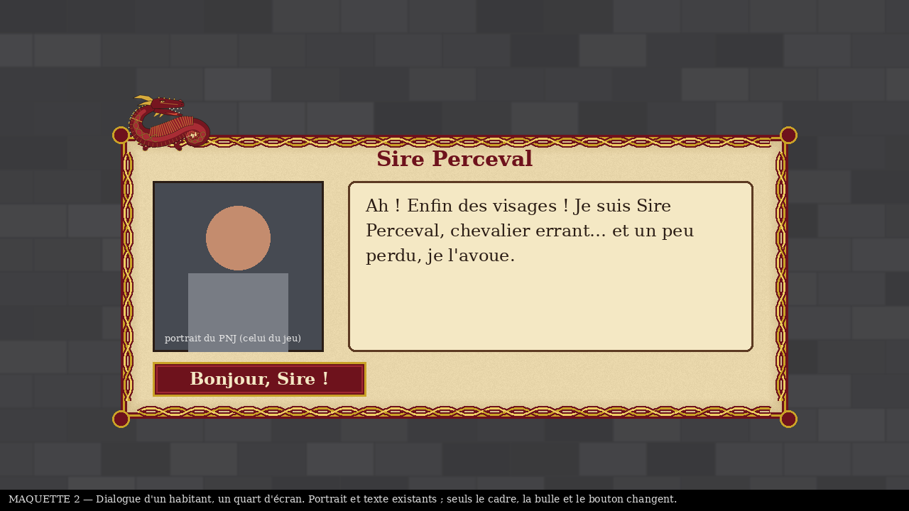
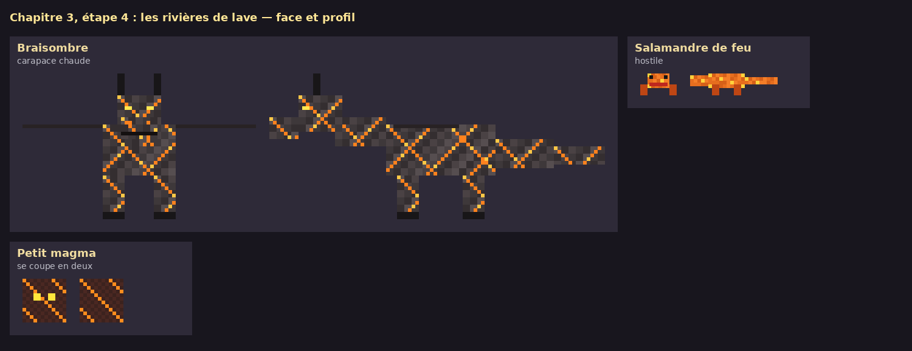
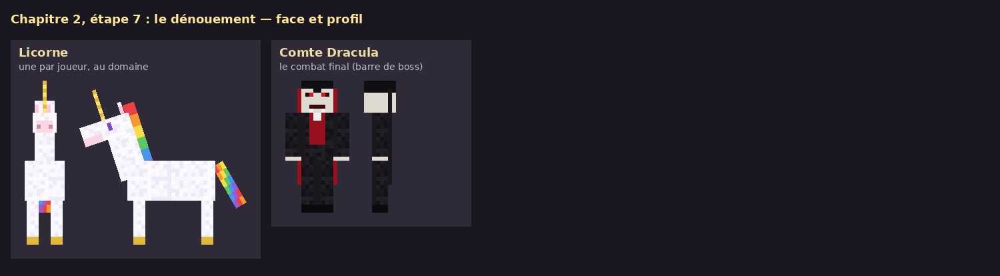
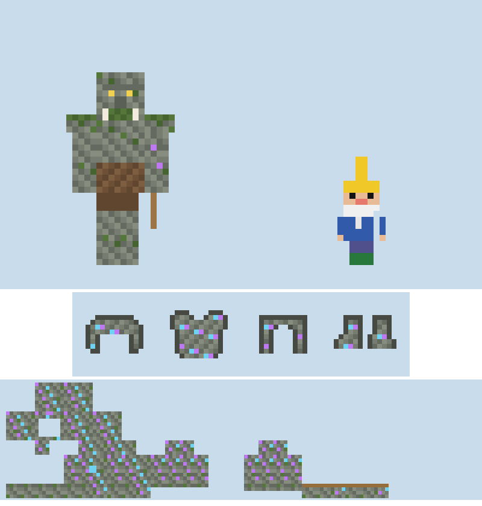
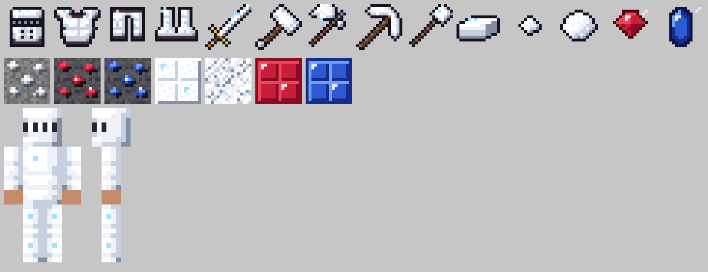
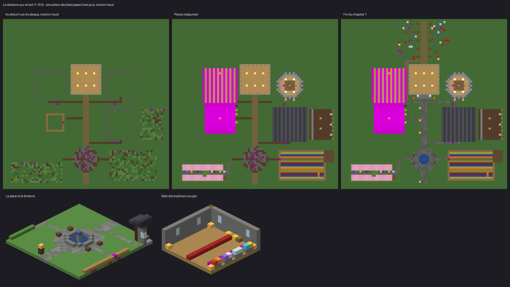

Addon d’aventure · Minecraft BedrockAdventure add-on · Minecraft Bedrock
Une aventure de jeu de rôle en quatre chapitres, conçue pour jouer à quatre en écran partagé, en famille.
A four-chapter role-playing adventure, designed for four players in split screen, as a family.
Me contacterGet in touchLe constatThe problem
« Beaucoup trop grand et beaucoup trop vide. »“Way too big and way too empty.”
C’est le point de départ : une famille de quatre (deux adultes, deux enfants de 9 et 13 ans) qui joue à Minecraft sur Switch, en écran partagé. Les soirées finissaient chacun dans son coin, ou à miner sans but.
That is where it started: a family of four (two adults, two children aged 9 and 13) playing Minecraft on Switch in split screen. Evenings ended with everyone off on their own, or just mining with no goal.
Rien ne retient le groupe ensemble : chacun part de son côté.
Nothing keeps the players together: each one wanders off.
Le monde est immense, et on ne sait pas quoi y faire.
The world is huge, and there is no clear thing to do.
Il n’y a ni histoire, ni quête, ni personnage à qui parler.
No story, no quests, no characters to talk to.
Le conceptThe concept
1
Un habitant confie une mission : ruines, énigmes, monstres.
A resident gives a mission: ruins, puzzles, monsters.
2
Matériaux, meubles et objets spéciaux pour la suite.
Materials, furniture and special items for what comes next.
3
Le coffre rempli, la pièce se reconstruit d’elle-même, décorée.
Once its chest is filled, the room rebuilds itself, fully decorated.
4
Il arrive en fanfare… et confie la quête suivante.
They arrive with a fanfare… and give the next quest.
L’aventure et la construction se nourrissent l’une l’autre. Le domaine devient le QG commun qui garde le groupe ensemble, d’un chapitre à l’autre.
Adventure and building feed each other. The estate becomes the shared base that keeps the group together, from one chapter to the next.
Ce qui existe déjàAlready built
Version 1.96.4 de l’addon.Add-on version 1.96.4.
Les différenciantsWhat sets it apart
Pensé pour quatre joueurs sur une seule console : textes lisibles sur un quart d’écran, objectifs communs.
Built for four players on one console: text readable on a quarter of the screen, shared goals.
Les quêtes rebâtissent le domaine, le domaine débloque les quêtes. Des pièces entières se construisent sous vos yeux.
Quests rebuild the estate; the estate unlocks quests. Whole rooms build themselves before your eyes.
Une découverte toutes les 1 à 2 minutes ; chaque salle a son décor et au moins une chose à faire.
A discovery every 1 to 2 minutes; every room has its decor and at least one thing to do.
Énigmes, pièges, boss en plusieurs phases, zones indestructibles : une vraie expérience de donjon.
Puzzles, traps, multi-phase bosses, indestructible zones: a real dungeon experience.
Habitants, alliés et méchants « de théâtre », avec un ton drôle et épique, adapté dès 9 ans.
Residents, allies and pantomime villains, with a funny yet epic tone, suitable from age 9.
Sorts du jour, potions, minerais livrés chaque matin, quêtes aléatoires sans fin.
Daily spells, potions, ore delivered every morning, endless random quests.
Différenciant n° 1Key differentiator
Une liste commune. N’importe quel joueur remplit n’importe quel objectif ; l’avancement est partagé.
One shared checklist. Any player can complete any objective; progress belongs to the group.
Des récompenses pour chacun. Un butin commun au domaine, un souvenir personnel par joueur, gardé pour les absents.
Rewards for everyone. Shared loot at the estate, a personal keepsake for each player, kept for absent ones.
Toujours savoir où aller. Une ligne d’objectif discrète (direction et distance) et un carnet d’aventure.
Always know where to go. A discreet objective line (direction and distance) and an adventure journal.
Lisible sur un quart d’écran. Titres, dialogues et fenêtres habillés de parchemin, rouge et or.
Readable on a quarter screen. Titles, dialogues and windows dressed in parchment, red and gold.

L’aventureThe adventure
| ChapitreChapter | Le mondeThe world | Le grand finalThe finale |
|---|---|---|
| 1. Le Domaine oublié1. The Forgotten Domain | Un domaine médiéval à restaurer, quatre habitants, ruines alentourA medieval estate to restore, four residents, ruins all around | Le Gardien de la ruine mauditeThe Guardian of the cursed ruin |
| 2. Au-delà du brouillard2. Beyond the Mist | Région gothique : marais, forêt des loups, cimetière, château-donjonA gothic region: swamp, wolf forest, graveyard, castle dungeon | Le vampire, combat en phases ; licornes à monterThe vampire, a multi-phase fight; unicorns to ride |
| 3. La Grande Forge3. The Great Forge | Cité naine gelée sous la montagne, descente en trois étagesA frozen dwarf city under the mountain, a three-level descent | Braisombre, le dragon de laveEmbershade, the lava dragon |
| 4. Arrick, le village maudit (en cours)4. Arrick, the Cursed Village (in progress) | Forêt de pleine lune, tour d’Igor, labyrinthe, champs, villageFull-moon forest, Igor’s tower, maze, fields, village | Jack’o Lantern, dans son manoirJack o’ Lantern, in his manor |
En plus : le zoo du dragon (banquise, jungle, forêt, plaine, tanière de la manticore), 9 personnages à quêtes secondaires, la bibliothèque de Merlin et ses sorts quotidiens.
Plus: the dragon zoo (ice floe, jungle, forest, plains, the manticore’s lair), 9 side-quest characters, Merlin’s library and its daily spells.
Le bestiaireThe bestiary
Modèles et textures faits main, dans le style du jeu. Plus de 10 boss et gardiens, chacun avec ses phases. Aucun monstre rare du jeu n’est réutilisé.
Hand-made models and textures in the game’s style. 10+ bosses and guardians, each with its own phases. None of the game’s rare mobs are reused.



Planches de travail, étiquettes en français.Working sheets, labels in French.
Objets et mineraisItems and ores

L’argent à mi-descente ; le rubis et le saphir tout au fond, à côté des diamants.
Silver halfway down; ruby and sapphire at the very bottom, next to diamonds.
Outils, armes et armure entre le fer et le diamant ; l’argent brûle les loups-garous.
Tools, weapons and armour between iron and diamond; silver burns werewolves.
Sorts, potions, lanterne d’Igor, armure du Troll, meubles médiévaux à fabriquer.
Spells, potions, Igor’s lantern, the Troll armour, medieval furniture to craft.

Le domaineThe estate
Posé par l’addon à la première connexion, près du point d’apparition.
Placed by the add-on on first login, near the world spawn.
Des pièces qui se bâtissent seules : cuisine, tour de l’alchimiste, salle d’armes, bibliothèque, écurie, mine.
Rooms that build themselves: kitchen, alchemist’s tower, armoury, library, stable, mine.
Des habitants qui y vivent et rendent service chaque jour de jeu.
Residents who live there and help out every in-game day.
La méthodeThe method
Une fiche visuelle validée avant d’écrire le code, puis le rendu final validé avant de l’intégrer.
A visual spec approved before any code is written, then the final result approved before it ships.
57 bancs de simulation rejouent l’aventure et contrôlent chaque bloc ; plus de 200 scénarios vérifient les enchaînements.
57 simulation benches replay the adventure and check every block; 200+ scenarios verify the story flow.
Paquets vérifiés et publiés automatiquement ; une mise à jour n’abîme jamais un monde en cours.
Packages checked and released automatically; an update never damages a world in progress.
Quêtes, recettes et réglages dans des fichiers de données lisibles ; un outil de test en jeu pour sauter à n’importe quelle étape.
Quests, recipes and settings in readable data files; an in-game test tool jumps to any step.
La propositionThe proposal
Je cherche un partenaire Minecraft Marketplace pour l’adaptation, la publication et la mise en avant de l’addon. Je propose une démonstration du chapitre 1 en écran partagé et l’accès aux fichiers.
I am looking for a Minecraft Marketplace partner for the adaptation, publishing and promotion of the add-on. I can offer a split-screen demo of chapter 1 and access to the files.
Antoine Saint-Père
Me contacterGet in touch